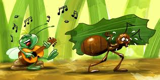
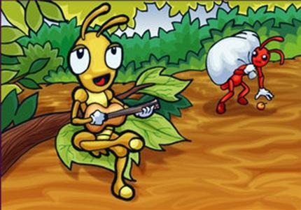

Era uma vez uma cigarra que vivia saltitando e cantando pelo bosque, sem se preocupar com o futuro.
Esbarrando numa formiguinha, que carregava uma folha pesada, perguntou: - Ei, formiguinha, para que todo esse trabalho? O verão é para gente aproveitar! O verão é para gente se divertir! - Não, não, não! Nós, formigas, não temos tempo para diversão. É preciso trabalhar agora para guardar comida para o inverno.
Durante o verão, a cigarra continuou se divertindo e passeando por todo o bosque. Quando tinha fome, era só pegar uma folha e comer. Um belo dia, passou de novo perto da formiguinha carregando outra pesada folha.A cigarra então aconselhou: - Deixa esse trabalho para as outras! Vamos nos divertir. Vamos, formiguinha, vamos cantar! Vamos dançar! A formiguinha gostou da sugestão. Ela resolveu ver a vida que a cigarra levava e ficou encantada. Resolveu viver também como sua amiga. ficou encantada. Resolveu viver também como sua amiga.
Mas, no dia seguinte, apareceu a rainha do formigueiro e, ao vê-la se divertindo, olhou feio para ela e ordenou que voltasse ao trabalho. Tinha terminado a vidinha boa. A rainha das formigas falou então para a cigarra: - Se não mudar de vida, no inverno você há de se arrepender, cigarra! Vai passar fome e frio. A cigarra nem ligou, fez uma reverência para rainha e comentou: - Hum!! O inverno ainda está longe, querida!
Para cigarra, o que importava era aproveitar a vida, e aproveitar o hoje, sem pensar no amanhã. Para que construir um abrigo? Para que armazenar alimento? Pura perda de tempo. Certo dia o inverno chegou, e a cigarra começou a tiritar de frio. Sentia seu corpo gelado e não tinha o que comer. Desesperada, foi bater na casa da formiga. Abrindo a porta, a formiga viu na sua frente a cigarra quase morta de frio. Puxou-a para dentro, agasalhou-a e deu-lhe uma sopa bem quente e deliciosa.  Naquela hora, apareceu a rainha das formigas que disse à cigarra: - No mundo das formigas, todos trabalham e se você quiser ficar conosco, cumpra o seu dever: toque e cante para nós. Para cigarra e paras formigas, aquele foi o inverno mais feliz das suas vidas.MAIS nun dia de quente de verão, uma alegre cigarra estava a cantar e a tocar o seu violão, com todo o entusiasmo. Ela viu uma formiga a passar, concentrada na sua grande labuta diária que consistia em guardar comida para o inverno. "D. Formiga, venha e cante comigo, em vez de trabalhar tão arduamente.", desafiou a cigarra "Vamo-nos divertir." "Tenho de guardar comida para o Inverno", respondeu a formiga, sem parar, "e aconselho-a a fazer o mesmo." "Não se preocupe com o inverno, está ainda muito longe.", disse a outra, despreocupada. "Como vê, comida não falta."
Mas a formiga não quis ouvir e continuou a sua labuta. Os meses passaram e o tempo arrefeceu cada vez mais, até que toda a Natureza em redor ficou coberta com um espesso manto branco de neve. Chegou o inverno. A cigarra, esfomeada e enregelada, foi a casa da formiga e implorou humildemente por algo para comer. "Se você tivesse ouvido o meu conselho no Verão, não estaria agora tão desesperada.", ralhou a formiga. "Preferiu cantar e tocar violão?! Pois agora dance!" E dizendo isto, fechou a porta, deixando a cigarra entregue à sua sorte.